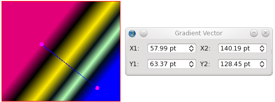
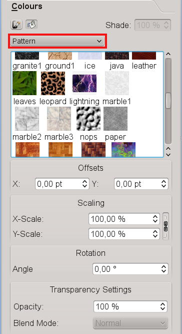

Let’s first talk about the most intuitive part of using a solid color as a fill for a frame by simply choosing a color from your current color set when “Normal” is chosen from the drop-down list just below the icon buttons for Edit Line Color Properties and Edit Fill Color Properties. Remember that in order to switch to a different color set you must go to Edit > Colors ... with no document open.
Choosing colors from the list changes the fill color, which will be obvious for text frames, shapes, or polygons, but may be less apparent for an image frame where an image fills the entire frame. Beyond this simple choice of color, you can then adjust the Shade (the color saturation) and Opacity (the degree of transparency). For a text frame, the saturation of the text itself is a separate setting in the Text tab of the Properties Palette. In contrast, if you adjust opacity in the Colors tab, you will see that this not only affects the transparency of the fill color, but also the text in a text frame, and the image in an image frame.
Below the opacity setting you also see an ability to select a Blend Mode, a feature whose intricacies will be explained elsewhere.
Clicking on the abovementioned button which shows “Normal” by default produces a drop-down list with the following choices:
Choosing any of these gradients brings up the gradient selector, initially only having 2 color stops, both black, at opposite ends of the selector. The red arrow indicates the currently selected color stop. You can choose another one by clicking on it. The selected stop is the one whose color will be affected by any change you make to color, shade or opacity. Move the position by click-dragging with the mouse or use the “Position” spinbox. You have at least two stops, but you may add as many additional ones as you like, each of which can have its own properties. When you place your cursor in the space below the gradient adjuster, a + sign appears next to it, and clicking creates a new color stop, which will now be the new active stop. You can remove stops by click-dragging them downward out of their starting location – sliding them in other directions will be a hopeless endeavour to get rid of them.
You can also adjust Shade and Opacity of gradient colors, and each color can have its own settings. Furthermore, changing the opacity of one or more gradient colors does not affect the opacity of text in a text frame.
|
|
Selecting either “Free Linear” and “Free Radial” gradients brings up another button: “Move Vector”. This button enables adjustment of the first and last color stops with the mouse and also brings up this spinbox dialog for numerical adjustments:

The first thing to know about using patterns (also known as “tiles”) is that you can’t use them if you have none. What this means is that you have to tell Scribus what it is supposed to use as a pattern. This can be done with the pattern dialog, which you access from Edit > Patterns ... in the Menu Bar, where you can load individual files (“Load File”) or a directory of files by choosing “Load Set”. Patterns can be either bitmaps or vectors.
 |
You can also use any item (frame, group, shape etc.) in your document as a pattern by using the “Send to Patterns” command from either the Context Menu or the Item menu in the Menu Bar.
Once you have created some patterns, when you go back to the Color tab of the Properties Palette, you will see at the end of the drop-down gradient list a new choice, called “Pattern”. In addition to bringing up a small window showing your pattern options, you can see spinboxes for X and Y offsets, scaling and rotation:
|  |
Something which you will find out is that, if you wish to use transparency for your pattern, it will also affect the text in a text frame. One workaround for this, so that your text is not affected by transparency, would be to copy the frame, with the copy exactly superimposed over the other, then choose “None” for fill color and set the top frame’s opacity to 100%.